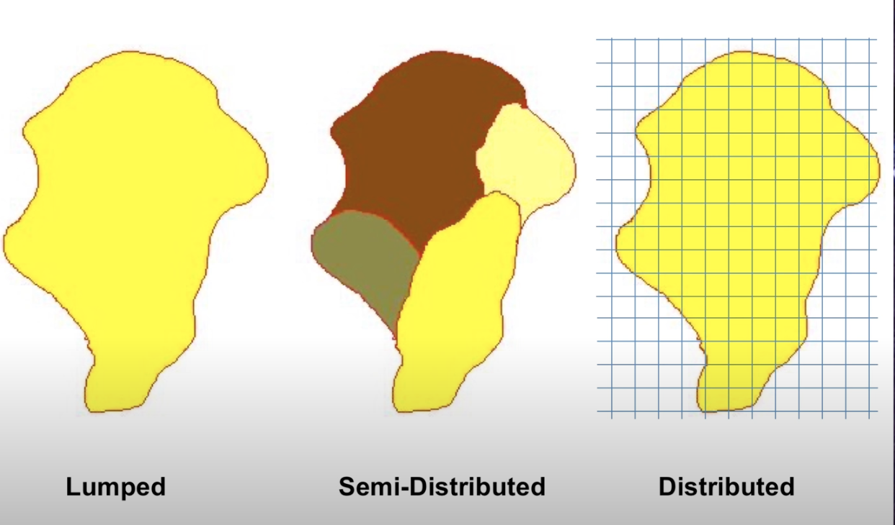
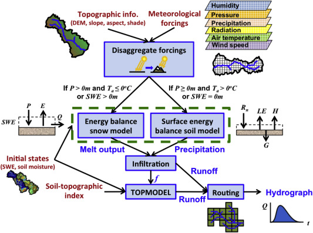
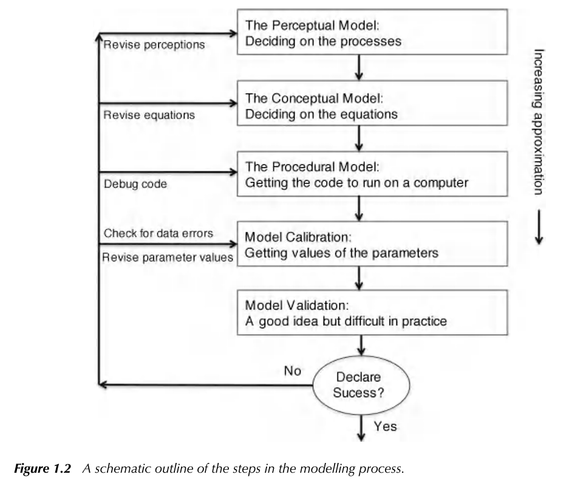

Chapter 5 Data Retrieval and Application
5.1 Classifying model structure
5.1.1 Learning Module 6
This chapter marks the beginning of your term project. The first project assignment will be a brainstorming and data retrieval exercise designed to guide you through identifying a research question and locating the data needed to answer it using a model written in R. The goal is to move you from structured labs toward independent inquiry. Based on your collective interests, we will gather datasets and build models to explore how measurable environmental factors (such as snowmelt, land cover, and topography), influence runoff. The term project is your opportunity to design and explore a question that is specific, testable, and feasible within the scope of this semester.
To prepare for that transition, we will begin with a review of modeling terminology, particularly concepts related to model type and complexity.
Environmental models, including hydrological models, are built around simplifying assumptions of natural systems. The complexity of the model may depend on its application. Effective hydrological models share key traits: they are simple, parsimonious, and robust across various watersheds. In other words, they are easy to understand and streamlined and consistently perform well across different basins or even geographical areas. Therefore, more complex is only sometimes better.
5.1.1.1 Spatial Complexity
There are general terms that classify the spatial complexity of hydrological models:
A lumped system is one in which the dependent variables of interest are a function of time alone, and the study basin is spatially ‘lumped’ or assumed to be spatially homogeneous across the basin. So far in this course, we have focused mainly on lumped models. You may remember the figure below from the transfer functions module. It represents the lumped watershed as a bucket with a single input, outlet output, and storage volume for each timestep.

A distributed system is one in which all dependent variables are functions of time and one or more spatial variables. Modeling a distributed system means partitioning our basins into raster cells (grids) and assigning inputs, outputs, and the spatial variables that affect inputs and outputs across these cells. We then calculate the processes at the cell level and route them downstream. These models allow us to represent the spatial complexity of physically based processes. They can simulate or forecast parameters other than streamflow, such as soil moisture, evapotranspiration, and groundwater recharge.
A semi-distributed system is an intermediate approach that combines elements of both lumped and distributed systems. Certain variables may be spatially distributed, while others are treated as lumped. Alternatively, we can divide the watershed into sub-basins and treat each sub-basin as a lumped basin. Outputs from each sub-basin are then linked together and routed downstream. Semi-distribution allows for a more nuanced representation of the basin’s characteristics, acknowledging spatial variability where needed while maintaining some simplifications for computation efficiency.

In small-scale studies, we can design a model structure that fits the specific situation well. However, when we are dealing with larger areas, model design may be challenging. Our data might differ across regions with variable climate and landscape features. Sometimes, it is best to use a complex model to capture all the different processes happening over a big area. However, it could be better to stick with a simpler model because we might have limited data or the number of calculations is very computationally expensive. It is up to the modeler to determine the simplest model that meets the desired application.
For this determination, it is important to understand the advantages of different modeling approaches.
5.1.1.2 Modeling Approaches
Empirical Models are based on empirical analysis of observed inputs (e.g., rainfall) or outputs (ET, discharge). These are most useful if you have extensive historical data so models can capture trends effectively. For example, if your goal is to predict the amount of dissolved organic carbon (DOC) transported out of a certain watershed, an empirical model will likely suffice. However, simple models may not be transferable to other watersheds. Also, they may not reveal much about the physical processes influencing runoff. Therefore, these types of models may not be valid after the study area experiences land use or climate change.
Conceptual Models describe processes with simple mathematical equations. For example, we might use a simple linear equation to interpolate precipitation inputs over a watershed with a high elevation gradient using precipitation measurements from two points (high and low). This represents the basic relationship between precipitation and elevation, but does not capture all features that affect precipitation patterns (e.g. aspect, prevailing winds). The combined impact of these factors is probably negligible compared to the substantial amount of data required to accurately model them, so a conceptual model is sufficient. These can models can be especially useful when we have limited data, but theoretical knowledge to help ‘fill in the blanks’.
Physically Based Models These models offer deep insights into the processes governing runoff generation by relying on fundamental physical equations like mass conservation. However, they come with drawbacks. Their implementation often demands complex numerical solving methods and a significant volume of input data. For example, if we want to understand how DOC transport changes in a watershed after a wildfire, we would want to understand many physical system properties pre- and post-fire like soil infiltration rates, quantification of forest canopy, stream flow data, carbon export, etc.. Without empirical data to validate these techniques, there is a risk of introducing substantial uncertainty into our models, reducing their reliability and effectiveness.
An example of a spatial distributed and physically based watershed model from Huning and Marguilis, 2015:

When modeling watersheds, we often use a mix of empirical, conceptual, and physically based models. The choice of model type depends on factors like the data we have, the time or computing resources we can allocate, and how we plan to use the model.
These categorizations provide a philosophical foundation of how we understand and simulate systems. However we can also consider classifications that focus on the quantitative tools and techniques we use to implement these approaches. Consider that we have already applied each of these tools:
Probability Models Many environmental processes can be thought of or modeled as stochastic, meaning a variable may take on any value within a specified range or set of values with a certain probability. Probability can be thought of in terms of the relative frequency of an event. We utilized probability models in the return intervals module where we observed precipitation data, and used that data to develop probability distributions to estimate likely outcomes for runoff. Probability models allow us to quantify risk and variability in systems.
Regression Models Often we are interested in modeling processes with limited data, or processes that aren’t well understood. Regression assumes that there is a relationship between dependent and independent variables (you may also see modelers call these explanatory and response variables). We utilized regression methods in the hydrograph separation module to consider process-based mechanisms that differed among watersheds.
Simulation Models Simulation models can simulate time series of hydrologic variables (as in the following snow melt module), or they can simulate characteristics of the modeled system, as we saw in the Monte Carlo module. These types of models are based on an assumption of what the significant variables are, an understanding of the important processes are, and/or a derivation of these physical processes from first principles (mass, energy balance).
5.1.1.3 A priori model selection:
By understanding the different frameworks of environmental modeling, we can choose the right tools for the right context, depending on our data, goals and resources. In reality, the final model selection is a fluid process requiring multiple iterations at each step. In Keith Beven’s Rainfall-Runoff Modelling Primer, they illustrate the process as:

While we aim to give some hands on experience across multiple model types, there is a wide range of possible models! Why would the most complex model, or one that represents the most elements in a system be best? Why even consider a simple bucket model?
Many modelers have observed that the number of parameters required to describe a key behavior in a watershed is often quite low, meaning increasing the number of parameters does not result in a significantly improved model. This idea that simple models are often sufficient for representing a system have led to the investigation of parsimonious model structures (less complex). Consider though, that the model must sufficiently represent processes or it will be too unreliable outside of the range of conditions on which it was calibrated.
Now that we have reviewed some concepts, our next step will be to develop a term project question. As you brainstorm and gather data, be sure to consider and use the modeling concepts and terminology we’ve covered to frame and structure your project design.
5.2 Gridded and tabular data retrieval
15 pnts
5.2.1 Learning Module 7
5.2.1.1 Objectives
This module introduces the spatial datasets that support watershed-scale modeling. Before you design your own modeling question, we’ll explore what types of data are available, how they are structured, and how to retrieve them reproducibly in R.
In this module you will:
–Retrieve streamflow data using the dataRetrieval package
–Download and manage Digital Elevation Models (DEMs)
–Retrieve and import remotely sensed raster data for a defined watershed extent
Integrate tabular, vector, and raster datasets within a single workflow
5.2.1.2 Background
So far, we have focused on conceptual models and parameter behavior. We now shift toward spatially distributed modeling, where environmental processes vary across space. Spatial modeling requires us to integrate hydrological concepts with geospatial data structures. Before doing that, we need a shared understanding of how spatial data are represented.
A refresher in GIS concepts: This module assumes familiarity with basic Geographic Information System (GIS) such as coordinate systems (latitude and lognitude, UTM). Let’s review some of the data structures we will use:
Gridded data refers to spatial data in raster format. If you have performed any GIS work, you are likely using gridded data. Rasters organize geographical areas into a grid where each regularly spaced cell represents a specific location and contains some attribute representing that location. For example, digital elevation models (DEM) are a form of gridded data. Imagine that we are working in a watershed and we can drop a grid or square celled net over the entire catchment. We can then model the elevation data of that catchment by assigning each cell in the net a mean elevation value for the area represented by the cell. Similarly, we can assign any value we wish to model to the cells. If we were to drop another net and assign a maximum tree height to every cell, we would be adding another ‘layer’ to our model. The spatial resolution of gridded data refers to the length and width of each cell represents. If we want to observe gridded data over time, we can generate a raster stack, where each raster layer represents a point in time. With a raster stack, we can increase the temporal resolution of our gridded data.
Vector data describe spatial features using points, lines, and polygons. These spatial features are represented a geometrical objects with associated attributes, like lines to represent linear features such as rivers, or points to represent single locations. We will work with a .shp file in this module that is a collection of points representing the boundary of a watershed.
Tabular data refers to data organized in a row-column format. In this class, each of our .csv datasets are a form of tabular data.
5.2.1.3 A refresher in remote sensing:
Remote sensing is the science of obtaining information about objects or areas from a distance, typically from aircraft or satellites. It involves the collection and interpretation of data gathered by sensors that detect electromagnetic radiation reflected or emitted from the Earth’s surface and atmosphere. As ecologists, many of us utilize remote sensing to observe and analyze the Earth’s surface and its dynamics, providing valuable insights into environmental processes, land use and land cover changes, natural disasters, and more. Some helpful terms to recall:
spatial resolution: Remotely sensed data can vary in its spatial resolution, which refers to the scale of the smallest unit, or level of visual detail.
temporal resolution: When used to describe remotely sensed data, we are often talking about how frequently a remote sensing system revisits the same area on the Earth surface. Systems with high temporal resolution revisit the same location frequently, allowing for monitoring rapid changes in phenomena, where a lower resolution may limit a system’s ability to capture short-term events.
We often find that data collection requires a balance of spatial and temporal resolution to select the most appropriate data for the coverage and detail that ecological work requires.
5.2.1.4 Ethical conduct
When utilizing publicly available datasets, it is important for us as users to:
-Be aware of any copyright or licensing agreements. There may be restrictions or usage terms imposed by data providers. Read provided agreements or terms to be sure we are in compliance with these when using datasets in our research. This may also include requirements for registration or subscription established by providers or agencies like USGS or NASA.
-Cite and acknowledge the contributions of data providers and researchers whose datasets we utilize. This also facilitates transparency and reproducibility in our research.
- Assess the quality and accuracy of geospatial data before using it for decision making purposes. It is important that we consider spatial resolution, temporal resolution and metadata documentation to critically evaluate the reliability of the datasets we use.
-Promote Open Data Principles: Try to explore and use publicly available datasets that support transparency and collaboration within our scientific and academic communities.
5.2.2 Repo link
The repo for this module can be found here
5.3 Term Project Assignment 1 - 10 pnts
As part of your graduate program, whether you are a GA or part of the Professional Masters’ Program, you are required to develop a professional paper. It is intended to give you an in-depth experience in the design, implementation, and completion of an original project. The paper will also be a way to showcase your research interests and accomplishments to potential employers or admissions committees. (See LRES 575 for more).
Your term project for this class is not meant to encompass your entire thesis or dissertation. Instead, it should focus on a single, well-defined component that contributes to your broader research. This could be an in-depth exploration of a specific feature of your research question, a feasibility study, or a clear demonstration of a cause-effect relationship within your work. In the upcoming weeks, you will design a repeatable workflow that is executable within the scope of this semester, and at the end of the term, you will present a concise (~8-minute) synopsis of your question and workflow.
This assignment is focused on data retrieval; you will develop the main goal and objectives of your term project and explore, evaluate, and select data sources. A key component of this process is formulating a research question that clearly defines both an explanatory variable and a response variable; one is not sufficient without the other. The workflow for this assignment will help you refine your question and identify the datasets needed to address it. Your assignment is considered complete when you have identified at least one explanatory variable and one response variable, along with the corresponding data sources.